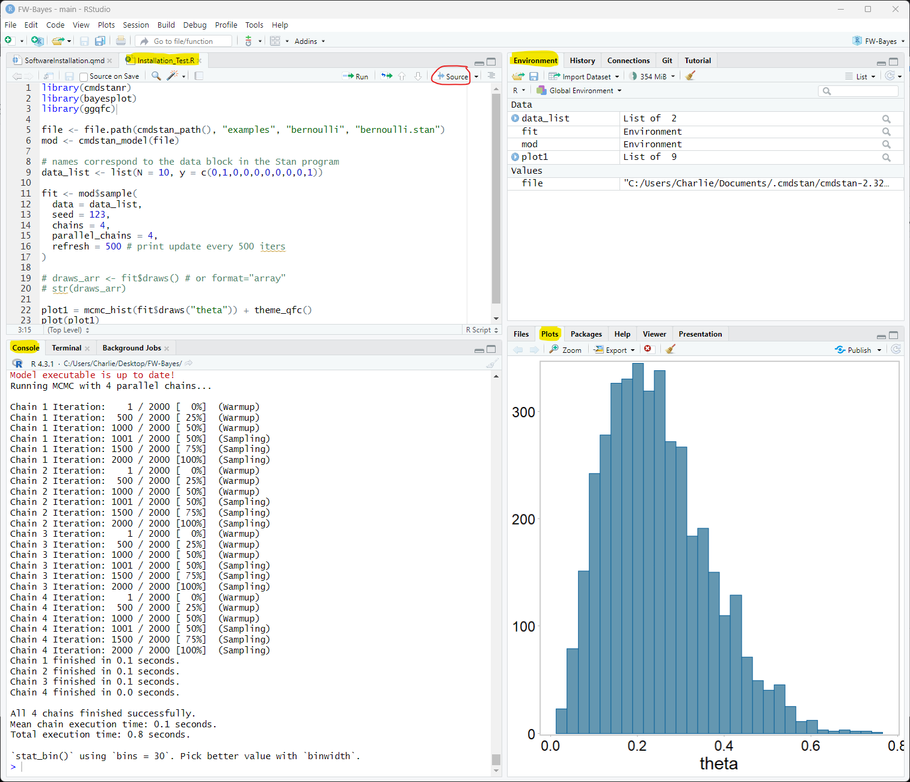

Software Installation
FW 891: Applied Bayesian Methods
1 Software for class
This document will go through the installation procedures for the software needed in the FW 891: Applied Bayesian Methods class. Please go through these procedures before class starts.
The installation is not hard but it involves a lot of new software that is being constantly updated, which often causes unexpected issues. Feel free to contact me, Charlie, (belinsky@msu.edu) if you have any issues – I will be happy to help you troubleshoot them.
2 R and RStudio
For this class you need to have at minimum R version 4.3 (released in April, 2023) and a version of RStudio from 2023.
R for Windows
R for Mac: There are two download options (M1/M2 and Intel) – your Mac will tell you if you try to install the wrong version
3 RTools (Windows only)
Make sure RStudio is closed when you install Rtools.
Many application in R (including rstan) require a C++ compiler. To get the compilers, download and install Rtools43. The RTools43 installer link is on this page.
You need to have a version of RTools43 from 2023. If you installed RTools43 before 2023 then reinstall it – it has changed.
4 Homebrew (Mac only)
Make sure RStudio is closed when you install Homebrew.
You have probably seen a Mac prompt to install the Command Line Developer Tools. The best way to do this is to install Homebrew. Homebrew is an indispensable program for programmers using Mac and it will handle your C++ compilation needs.
To install Homebrew, copy the code on the Homebrew page starting with /bin/bash -c.... Paste the code to either a Mac Terminal or the Terminal tab in RStudio (they are the same thing) and hit Enter.
5 R Packages
You will need to install the following packages in R:
rstan, tidyverse, bayesplot, remotes, devtools, gridExtra, and hexbin.
They can all be installed at once with the following R command (and a little patience):
install.packages(c("rstan", "tidyverse", "bayesplot", "remotes",
"devtools", "gridExtra", "hexbin"))A pop-up will appear (sometimes behind the RStudio window) asking you:
Do you want to install from sources the packages which needs compilation?
Answer: Yes.
6 CmdStanR
For this class we will be using the cmdstanr package. This is not a package on CRAN, so it needs to be downloaded and compiled for the GitHub page using the following R code:
remotes::install_github("stan-dev/cmdstanr")After installing the cmdstanr package on Windows you will need to execute the following:
cmdstanr::check_cmdstan_toolchain(fix=TRUE)For both Windows and Mac, you now need to install cmdstanr application on your computer (this takes a while):
cmdstanr::install_cmdstan(overwrite=TRUE)7 QFC Package
The GGPlots created in this class are done using a theme coded by the QFC which can be installed as a package:
devtools::install_github("QFCatMSU/gg-qfc")8 Test Installation
Click here to download the installation test script (Installation_Test.R)
Open the script in RStudio, and click Source. The results should look like this:

Alternatively, you can copy and paste the following code in RStudio and click Source:
library(cmdstanr)
library(bayesplot)
library(ggqfc)
file <- file.path(cmdstan_path(), "examples", "bernoulli", "bernoulli.stan")
mod <- cmdstan_model(file)
# names correspond to the data block in the Stan program
data_list <- list(N = 10, y = c(0,1,0,0,0,0,0,0,0,1))
fit <- mod$sample(
data = data_list,
seed = 123,
chains = 4,
parallel_chains = 4,
refresh = 500 # print update every 500 iters
)
plot1 = mcmc_hist(fit$draws("theta")) + theme_qfc()
plot(plot1)